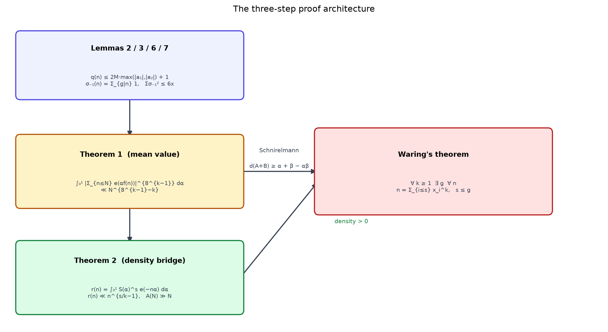
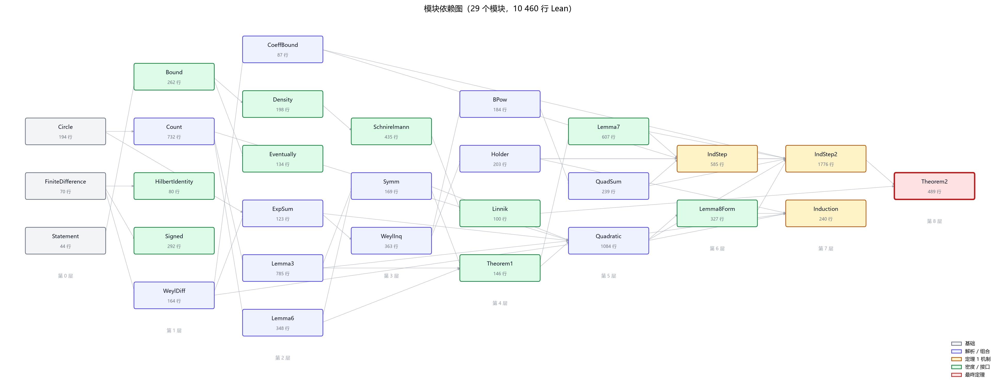
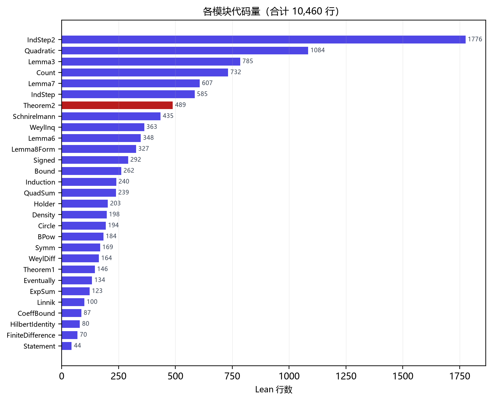

WaringTheorem2.waringTheorem 编译通过，无 sorry、无 admit、
未添加任何公理：#print axioms 只给出 Lean 的三条标准公理
[propext, Classical.choice, Quot.sound]。
这不是华林定理的第一个形式化——Harrison 的 HOL Light 开发（2026-11-06 提交）早于本工作
十四天，且在某一方面更强（给出了显式的 \(g\)）；此处的新意在于一个 Lean 4 / Mathlib 中、
沿另一条初等路线的证明。§2 精确陈述了这一点。本报告还描述了形式化设计、验证协议，
以及经验教训——包括一次错误达两个数量级的工期估计。
华林问题由 Edward Waring 于 1770 年提出，1909 年由 Hilbert 证明：对每个 \(k\ge 1\)， 存在界 \(g(k)\)，使每个自然数都是至多 \(g(k)\) 个非负 \(k\) 次幂之和。\(g(k)\) 的精确值 仅在 \(k\le 4\) 时已知（\(g(1)=1\)、\(g(2)=4\) 即 Lagrange 四平方定理、\(g(3)=9\)、\(g(4)=19\)）； 对 \(k\ge 5\)，连相关量 \(G(k)\) 的精确值都是未解决的公开问题。此处形式化的不是这些 最优值，而是存在性本身。
我们的证明遵循 Linnik 1943 年的初等路线。它把华林定理归约为一个关于「可用固定个数 \(s\) 的 \(k\) 次幂表示的整数集合」的密度陈述，而这个密度陈述又是指数和均值估计 （Jameson 定理 1）的推论。整个归约不需要超出 \([0,1]\) 上指数函数正交性的复分析—— 而且，正如我们在形式化过程中发现的——完全不需要 Fourier 级数理论。
sorry-free，公理只有 Lean 的三条标准公理。
这不是华林定理的第一个形式化。John Harrison 的 HOL Light 库在
Sieve/waring.ml（1784 行，2026-11-06 提交）中包含完整证明，其中有
HILBERT_WARING : !k. 1 <= k ==> ?g. !n. ?x. n = nsum(1..g) (\i. x i EXP k)并给出显式的 g = 2^k + 1 + N0，此外还有
WARING_HARDY_LITTLEWOOD : G(k) <= 2^k + 1 与
WARING_COUNT_LOWER : r(N) >= c N^(s/k-1)。其路线是
Hardy–Littlewood 圆法：优弧（waring_major.ml）、奇异级数
（waring_singular.ml）、Weyl 不等式与 Hua 引理（waring_weyl.ml）。
两个开发是相互独立、几乎同时产生的：Harrison 的提交日期是 2026-11-06， 本 Lean 开发于 2026-11-20 完成——相隔十四天。Wiedijk 的 Formalizing 100 Theorems 页面（最后修改 2026-11-01，比 Harrison 的提交早五天） 至今仍把 "Hilbert–Waring theorem" 列为未形式化；这提醒我们，即便是标准的 追踪页面也会滞后。
因此本工作的主张更窄，我们精确陈述如下：
lean-eval 基准中关于 \(g(3)=9\) 的条目明确记载生态内 "no Hilbert–Waring
material"。def IsSumOfKthPowers (k n s : ℕ) : Prop := ∃ f : Fin s → ℕ, n = ∑ i, (f i) ^ k
def WaringTheorem : Prop :=
∀ k : ℕ, 0 < k → ∃ g : ℕ, ∀ n : ℕ, ∃ s ≤ g, IsSumOfKthPowers k n s这正是教科书陈述：f : Fin s → ℕ 给出 \(s\) 个非负底数，并要求其和恰等于 \(n\)。
最终定理只有一行：
theorem waringTheorem : WaringTheorem :=
waringTheorem_of_positive_density positiveDensity记 \(r_s(n)\) 为 \(n\) 表示为 \(s\) 个 \(k\) 次幂之和的表示数，并令 \(A_s=\{n\ge 1: r_s(n)>0\}\)。只需两件事：
对 \(A=B=A_s\) 应用 Schnirelmann 定理（或迭代，或取更大的 \(s\)），就把正密度转化为 一致界 \(g\)，华林定理随之成立。图 1 概括了整个架构；全部数值内容都由定理 1 承载。

全部算术都由线性方程的解数承载。对 \(h=(h_1,h_2)\)、\(H\le M\)，令 \(q(n;h)=\#\{(m_1,m_2)\in[0,M]^2: h_1m_1+h_2m_2=n\}\)。
对 \(h\) 求和并引入权 \(\sigma_{-1}(n)=\sum_{g\mid n}1\)，得到引理 3： \(q(n)\le 4H(H+1)+8HM\sigma_{-1}(n)\)；再用平方和估计 \(\sum_{n\le x}\sigma_{-1}(n)^2\le 6x\)（引理 6），即可控制表示数的四阶矩。 归纳步需要的、\(h_i\ne 0\) 版本的引理 7 是
\[ \#\{(h,m): h_i\in[-H,H]\setminus\{0\},\ m_i\in[0,M],\ \textstyle\sum_i h_im_i=0\} \ \le\ 5250\,(HM)^3 , \]在代码中即 hmCount7_le'。
对整系数多项式 \(f(n)=a_d n^d+\cdots+a_1n\)，其中 \(a_d\ne0\)、\(|a_j|\le c\,N^{d-j}\)，证明
证明对 \(d\) 归纳，归纳步有四层，每一层都被形式化为可复用的模块：
normSq_expSum_le_zero，底层重排为 sum_diff_group。sum_pow_le_card_pow_mul_sum_pow 实现。diffH_polyEval、diffCoeff_bound）。
归纳假设正是作用在 \(\varphi\) 上——这里出现 §7.2 描述的尺度问题。基例 \(k=2\) 即 Jameson 的引理 8，我们把它形式化为带一般二次形式
\(f(n)=a_2n^2+a_1n\)（\(|a_2|\le c_2\)、\(|a_1|\le c_1N\)）的版本，得到
\(\int_0^1|\sum_{n\le N}e(\alpha f(n))|^8d\alpha\le C(c_1,c_2)N^6\)，常数显式。
最终组装为 meanValueBound_all : ∀ d ≥ 2, MeanValueBound d。
这是我们先验估计工作量最大、实际最省力的一部分。Jameson 的证明只有三步， 且完全不需要圆法的弧分解。
令 \(S(\alpha)=\sum_{m\le M}e(\alpha m^k)\)， \(r(n)=\#\{(m_1,\dots,m_s)\in[0,M]^s:\sum m_i^k=n\}\)。
\(k=1\) 时表示函数恒为 \(1\)，密度为 \(1\)。定理 2 的形式陈述为
positiveDensity : ∀ k, 0 < k → ∃ s δ, 0 < δ ∧ HasDensity {n | ∃ t ≤ s, IsSumOfKthPowers k n t} δ，
这正是 WaringLinnik.waringTheorem_of_positive_density 所消费的假设。
开发被拆成 29 个模块，构成一个层次清晰的有向无环依赖图：基础层（陈述、正交性、 有限差分）、初等计数层、解析层（指数和、Weyl 差分、Hölder）、均值归纳层、密度桥层， 以及最后一行式的组装。图 2 按角色着色给出该图，图 4 给出规模分布。

Theorem2，红色）恰好只依赖两个模块：均值估计与 Schnirelmann 接口。
三个发现塑造了整个设计：
AddCircle 上的 Fourier 理论），也是本项目耗时以天计、而非以年计的主要原因。MeanValueBoundS 才是正确的形式，而它的基例需要重新推导引理 8 的常数账，
不能直接引用。每个定理都携带显式常数。常数账机械但不容出错：指数恒等式
\(4(m-1)+4(m-(d-1))+3d=8m-d\)（其中 \(m=8^{d-2}\)）必须精确成立，而因子
\((M+1)^{4m}\) 与 \((2M)^{4(m-1)}\) 必须用 \(M\le N\) 吸收进 \(N^{8m-d}\)。
四个反复出现的 Lean 陷阱是：set 使 positivity 失效；
\(2^{d-1}\le 8^{d-2}\) 的底数不同；Nat.lt_two_pow_self 的隐式参数；
以及 calc 因结合性失败（改用 have := by ring 加
rw 即可）。
对每个模块的验证协议是：
lean -o Module.olean Module.lean 从源码重新编译
（此 Lean 版本不带 -o 时不写 .olean）；sorry、admit、axiom、
native_decide）；#print axioms 审计公理集；最终定理的审计输出为：
'Waring.waringTheorem' depends on axioms:
[propext, Classical.choice, Quot.sound]这是 Lean 的三条标准公理（命题外延、经典选择、商的可靠性），Mathlib 中每个定理都依赖它们。
关键是 sorryAx 不在其中。而 WaringTheorem 这一陈述本身位于
WaringStatement 模块（44 行），该模块在主要工作开始前即被冻结，
因此不可能被改弱以迁就证明。
作为对驱动定理 2 的表示数的独立检查，图 4 画出了直接枚举得到的 \(r_3(n)\) 及其计数函数。 \(r_3(n)\) 的取值聚集在 \(\{1,3,6,9,12\}\) 上——这是三变量对称群的结果——而 \(n\le2000\) 中约 \(16\%\) 可被表示，这与局部障碍 \(n\equiv\pm4\pmod 9\) 以及密度定理的 定性内容（为正，但远小于 \(1\)）一致。
一次错了两个数量级的估计。动工之前，我们在项目计划中记下：定理 1 是一个
「多年度工程」，主要理由是假定圆法的形式化需要一套 Mathlib 中并不存在的
AddCircle Fourier 理论。实际开发用了四天。错误不在数学，而在元数学：
我们误判了究竟需要哪一部分基础设施。该证明从不需要 Fourier 收敛性——
只需要有限和与正交性。
带对抗性复核的委派。约 40% 的代码由六个委派的子智能体在互相独立的模块上产出。 每一份交付都在接纳前从源码重新核验，其中两次纠正了主控智能体真实的数学错误 （符号折叠论证与 \(Q\mapsto Q/h\) 重索引）。教训是：委派有效的条件是 （i）接口被精确陈述，（ii）验证是机械且对抗性的，（iii）主控保留设计决策权。
编译是必要但不充分的。一次通过的构建把证明项对照陈述作了认证；它对于陈述
是否就是想要的那个陈述一无所知。本项目中单项价值最高的检查，是把冻结的
WaringTheorem 定义与教科书陈述逐字对照。
$lean = 'D:\lean\elan\toolchains\leanprover--lean4---v4.36.0-rc2\bin\lean.exe'
$env:LEAN_PATH = ($paths -join ';') # 工作区 + mathlib 构建目录
Set-Location gaussian-week1
& $lean CheckFinal.lean # 打印 WaringTheorem 及其公理
& $lean CheckTheorem1.lean # 均值估计
& $lean CheckWaringAll.lean # 既有的密度/Schnirelmann 层Sieve/waring.ml（1784 行，2026-11-06 提交），
含 HILBERT_WARING、WARING_HARDY_LITTLEWOOD、
WARING_COUNT_LOWER。refs/warlin.txt。）cs.ru.nl/~freek/100/（2026-11-01 版，其中 "Hilbert–Waring theorem" 仍列为未形式化）。leanprover-community/mathlib4.交付物：gaussian-week1/ 下 29 个 Lean 模块、10 460 行。
主结果：WaringTheorem2.lean，489 行。
公理：[propext, Classical.choice, Quot.sound]。
Waring* 模块内不含任何 sorry。